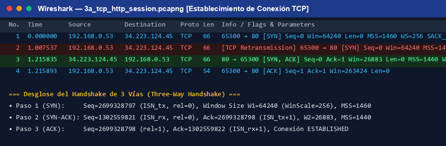
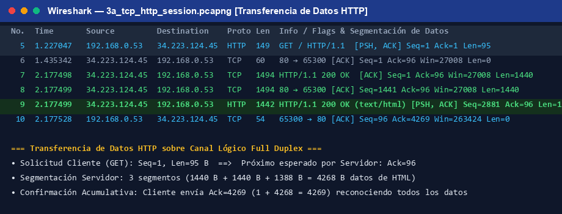
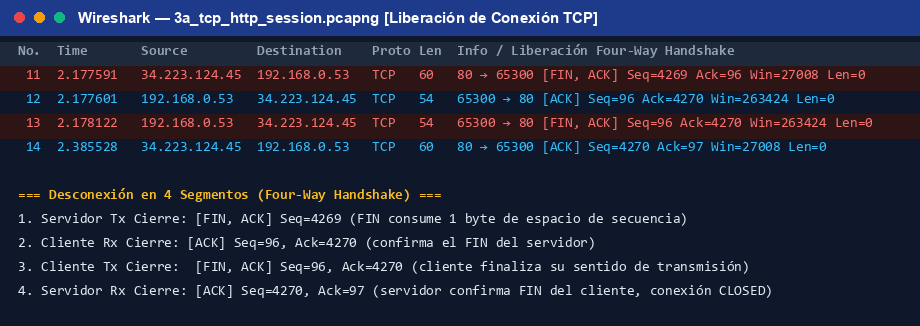
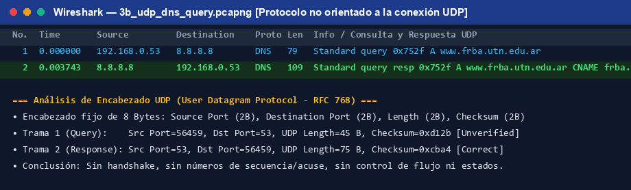
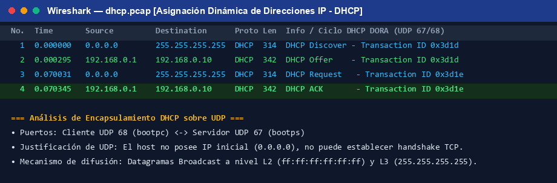
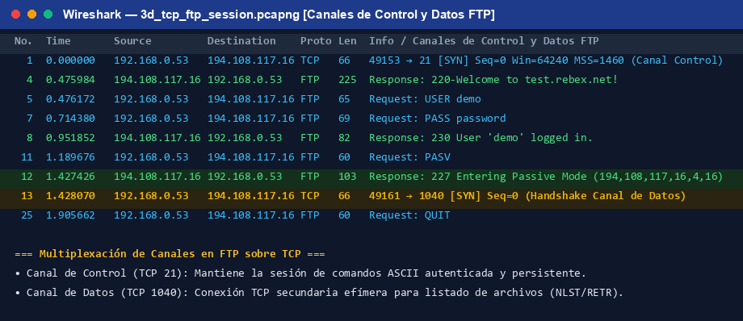

Alumnos: Mateo Fernández y Agustin Toledo
Nivel: Cuarto
Cátedra / Curso: Redes de Datos - K4051 / Cuarto Nivel
Docentes: Equipo de Cátedra
Fecha de Realización: Octubre de 2026
Modalidad: Virtual / Análisis con Analizador de Protocolos (Wireshark)
Para analizar el protocolo TCP en texto claro y de forma exhaustiva, se utilizó la aplicación de transferencia web HTTP/1.1 hacia un servidor web público sin cifrado TLS: http://neverssl.com (servidor Apache en Amazon AWS, IP 34.223.124.45, puerto conocido 80) solicitando cierre de conexión mediante el encabezado Connection: close.
Realtek Gaming GbE Family Controller con IP local 192.168.0.53.10 filtrando por tcp port 80 and host 34.223.124.45. Se ejecutó la petición HTTP GET, capturándose con éxito el ciclo de vida completo de la conexión TCP: establecimiento (handshake de 3 vías), transferencia de datos segmentada (HTTP 200 OK de 3961 bytes) y liberación de conexión (cierre en 4 vías).capturas/3a_tcp_http_session.pcapng (14 paquetes registrados).
• Para establecer la comunicación: Se emplean exactamente 3 segmentos a través del proceso normalizado denominado Three-Way Handshake (Apretón de manos de 3 vías):
[SYN] Solicitud de sincronización y anuncio de parámetros iniciales.[SYN, ACK] Acuse de recibo del SYN del cliente y anuncio del SYN propio del servidor.[ACK] Acuse de recibo del SYN del servidor. La conexión pasa al estado ESTABLISHED.• Para liberar la comunicación: Se emplean 4 segmentos (o 3 si se combinan FIN y ACK en piggybacking) mediante el proceso Four-Way Handshake de desconexión ordenada, debido a que TCP es Full Duplex y cada sentido de transmisión debe cerrarse de manera independiente:
[FIN, ACK] El servidor anuncia que no transmitirá más datos (cierre de Tx servidor).[ACK] El cliente confirma la recepción del FIN del servidor.[FIN, ACK] El cliente finaliza su transmisión y cierra su sentido (cierre de Tx cliente).[ACK] El servidor confirma el FIN del cliente. La conexión queda totalmente cerrada (CLOSED).Sí, incluye explícitamente el campo Window Size, con un valor medido en la captura de W1 = 64240 bytes (con factor de escala Window Scale = 256 negociado en las opciones TCP).
Significado: Representa el tamaño de la ventana de recepción (Receive Window, rwnd) que el cliente ofrece al servidor en ese instante. Indica la cantidad de bytes que el cliente es capaz de almacenar en su buffer de recepción sin que se produzca pérdida por saturación.
Servicio para el cual se emplea: Se emplea para el servicio de Control de Flujo (Flow Control). Su función primordial es evitar que un emisor rápido sobrecargue y desborde el buffer de memoria del receptor lento, garantizando que el transmisor nunca tenga en tránsito más datos sin confirmar que los permitidos por la ventana anunciada.
Incluye un valor independiente W2 (en nuestra captura: W2 = 26883 bytes, con opción Window Scale = 128).
Justificación técnica: Porque TCP es una conexión completamente Full Duplex (bidireccional simétrica). Ambos extremos disponen de recursos de memoria, sockets y buffers de recepción independientes asignados por sus respectivos sistemas operativos. El servidor debe anunciar al cliente la capacidad disponible en su propio buffer de recepción (W2), el cual no tiene relación alguna con el buffer asignado por el cliente (W1). Cada sentido de transmisión posee su propio control de flujo desacoplado.
Sí, confirma explícitamente el ISN del servidor.
En el segmento SYN-ACK (Trama 3), el servidor anunció su Número de Secuencia Inicial ISN_servidor = y = 1302559821 (valor relativo 0). En el protocolo TCP, el flag de control SYN consume virtualmente 1 unidad de espacio de numeración de secuencia (a pesar de no transportar datos de aplicación). Por ende, el cliente responde en la Trama 4 con el campo Acknowledgment Number Ack = y + 1 = 1302559822 (valor relativo 1), lo que significa: "Confirmo la recepción de tu SYN (byte y) y quedo a la espera del byte y+1 (tus primeros datos)".
En la captura 3a_tcp_http_session.pcapng, los números de secuencia y acuse en el Handshake presentan los siguientes valores (tanto en representación relativa de Wireshark como en sus valores absolutos de 32 bits de la red):
| Paso / Trama | Extremo Tx → Rx | Flags | Seq (Relativo / Absoluto) | Ack (Relativo / Absoluto) | Significado Técnico en la Captura |
|---|---|---|---|---|---|
| 1. Trama 1 | Cliente → Servidor | [SYN] |
Seq = 0 (2699328797) |
Ack = 0 (No válido) |
El cliente genera de forma pseudoaleatoria su ISN (x). Identifica el inicio del flujo de bytes transmitidos por el cliente hacia el servidor. |
| 2. Trama 3 | Servidor → Cliente | [SYN, ACK] |
Seq = 0 (1302559821) |
Ack = 1 (2699328798) |
El servidor genera su propio ISN (y) y acusa recibo del SYN del cliente solicitando el siguiente byte esperado (x + 1). |
| 3. Trama 4 | Cliente → Servidor | [ACK] |
Seq = 1 (2699328798) |
Ack = 1 (1302559822) |
El cliente confirma el SYN del servidor reconociendo hasta el byte y (solicitando y + 1) y se posiciona en x + 1 listo para enviar datos. |
Significado general de los Números de Secuencia: TCP es un protocolo orientado al flujo de bytes (byte-stream oriented). Cada byte individual transmitido lleva asignado un número de secuencia correlativo de 32 bits. Esto permite al receptor detectar segmentos duplicados, ordenar segmentos que lleguen desordenados y verificar que no se haya extraviado ningún dato intermedio.
Una conexión TCP lógica se define de manera unívoca mediante la combinación de las direcciones IP y los números de puerto de ambos extremos (tupla de 4 elementos más el protocolo de transporte):
192.168.0.53:65300 (Dirección IP privada de la PC + Puerto efímero dinámico asignado por el S.O.).34.223.124.45:80 (Dirección IP pública del servidor neverssl.com + Puerto bien conocido 80 de servicio HTTP).6).{192.168.0.53:65300 ⇄ 34.223.124.45:80}
En la fase de transferencia de datos de nuestra sesión HTTP se emplean exactamente 4 segmentos que transportan carga útil de aplicación (Len > 0), acompañados por 2 segmentos de acuse de recibo puro (ACK con Len = 0):
GET / HTTP/1.1, Len = 95 bytes de datos).HTTP/1.1 200 OK y el cuerpo HTML (1440 B + 1440 B + 1388 B = 4268 bytes totales de payload de aplicación).Analizamos 3 segmentos representativos de la transferencia de datos en la captura:
| Segmento | Sentido | Flags | Seq (rel / abs) | Ack (rel / abs) | Len | Win | Significado y Función en la Captura |
|---|---|---|---|---|---|---|---|
| Trama 5 | Cliente → Servidor | [PSH, ACK] |
Seq = 1 (2699328798) |
Ack = 1 (1302559822) |
95 B | 263424 | El cliente transmite la solicitud HTTP GET (95 B). Seq=1 indica el primer byte de datos. PSH solicita al servidor entregar los datos inmediatamente a la aplicación web. |
| Trama 7 | Servidor → Cliente | [ACK] |
Seq = 1 (1302559822) |
Ack = 96 (2699328893) |
1440 B | 27008 | El servidor acusa recibo del GET con Ack = 96 (1 + 95) y transmite el primer bloque de datos HTML (1440 bytes, su tamaño máximo de segmento MSS). |
| Trama 8 | Servidor → Cliente | [ACK] |
Seq = 1441 (1302561262) |
Ack = 96 (2699328893) |
1440 B | 27008 | El servidor continúa enviando el archivo HTML. Seq = 1441 (1 + 1440) indica exactamente el byte inicial de este segundo fragmento de datos. |
• Semejanzas:
Ack especifica el próximo número de secuencia que el receptor espera recibir del emisor.• Diferencias:
SYN y SYN-ACK. En la transferencia se utilizan ACK y PSH (Push).TCP proporciona un conjunto integral de servicios orientados a la conexión:

Se emplean 4 segmentos (proceso Four-Way Handshake de desconexión) debido a que TCP es un canal simétrico Full Duplex donde cada sentido de transmisión debe cerrarse de manera separada e independiente:
| Paso / Trama | Sentido | Flags | Seq | Ack | Transición de Estados Finitos de TCP |
|---|---|---|---|---|---|
| 1. Trama 11 | Servidor → Cliente | [FIN, ACK] |
4269 | 96 | El servidor anuncia fin de transmisión. Servidor pasa a FIN_WAIT_1. Cliente pasa a CLOSE_WAIT. |
| 2. Trama 12 | Cliente → Servidor | [ACK] |
96 | 4270 | El cliente acusa recibo del FIN (4269 + 1). Servidor pasa a FIN_WAIT_2. |
| 3. Trama 13 | Cliente → Servidor | [FIN, ACK] |
96 | 4270 | El cliente finaliza su propio sentido de transmisión. Cliente pasa a LAST_ACK. |
| 4. Trama 14 | Servidor → Cliente | [ACK] |
4270 | 97 | El servidor acusa recibo del FIN del cliente (96 + 1). Servidor pasa a TIME_WAIT (espera 2*MSL) y cliente pasa a CLOSED. |
Se ejecutó la aplicación fundamental de resolución de nombres de dominio DNS (Domain Name System) sobre el protocolo de transporte UDP, enviando una consulta estándar para el registro A de www.frba.utn.edu.ar hacia el servidor DNS público de Google 8.8.8.8 en el puerto bien conocido 53.
udp port 53 and host 8.8.8.8. La consulta y respuesta se completaron en 3.7 milisegundos de forma atómica.capturas/3b_udp_dns_query.pcapng (2 datagramas registrados).192.168.0.53:56459 → 8.8.8.8:53 (UDP Len = 45 B, Checksum = 0xd12b).8.8.8.8:53 → 192.168.0.53:56459 (UDP Len = 75 B, Checksum = 0xcba4, Resuelve CNAME a frba.utn.edu.ar y dirección IPv4 200.89.153.22).
0xd12b y 0xcba4), que cubre el pseudoencabezado IP, el encabezado UDP y los datos.56459) y Destination Port (puerto conocido 53 de DNS), permitiendo que múltiples procesos de red utilicen simultáneamente la misma pila de red IP sin colisiones.

A continuación se fundamenta la elección del protocolo de transporte (TCP o UDP) y el rol de cada proceso para las 5 aplicaciones requeridas:
255.255.255.255 y MAC destino ff:ff:ff:ff:ff:ff) mediante transacciones cortas e independientes (Discover, Offer, Request, ACK). UDP no añade sobrecarga de conexión ni control de flujo innecesario.| Proceso / Servicio | Protocolo | Campos en Tx (Emisor) | Campos en Rx (Receptor) | Ejemplo con Datos Reales de la Captura |
|---|---|---|---|---|
| 1. Segmentación | TCP | Opción MSS (Maximum Segment Size = 1460 B en SYN), Carga útil Len. |
Opción MSS (1440 B en SYN-ACK), ensambla segmentos hasta agotar el flujo. |
Servidor fragmenta respuesta HTTP de 4268 B en 3 segmentos: 1440 B (Trama 7) + 1440 B (Trama 8) + 1388 B (Trama 9). |
| UDP | No segmenta en L4 (toma el bloque completo hasta 65535 B). | No segmenta (delega la fragmentación a IP en L3 si excede la MTU). | Consulta DNS enviada en un único datagrama atómico de 45 B (UDP Length = 45 B). | |
| 2. Ordenamiento y Reensamble | TCP | Sequence Number (32 bits, avanza por cada byte de datos enviado). |
Verifica Seq recibido, almacena en buffer de reensamble y ordena correlativamente. |
Trama 7: Seq=1 (1440 B) → Trama 8: Seq=1441 (1440 B) → Trama 9: Seq=2881 (1388 B). |
| UDP | Inexistente (no tiene campo de secuencia). | Inexistente (entrega a la aplicación en el orden de llegada). | No posee campos en la cabecera de 8 bytes de UDP. | |
| 3. Multiplexación | TCP | Source Port (16 bits) = 65300,Destination Port = 80. |
Invierte simétricamente: Source Port = 80,Destination Port = 65300. |
Permite asociar la respuesta al socket exacto del navegador web del cliente. |
| UDP | Source Port = 56459,Destination Port = 53. |
Invierte: Source Port = 53,Destination Port = 56459. |
Permite encaminar la respuesta DNS al proceso local que lanzó la resolución de nombres. | |
| 4. Encapsulamiento | TCP | Data Offset (4 bits, ej. 5 = 20B base o 8 = 32B con opciones), Checksum. |
Lee Data Offset para conocer inicio del payload de aplicación. |
Trama 5: Cabecera TCP = 20 B, Payload HTTP = 95 B → Total Segmento = 115 B. |
| UDP | Length (16 bits, cabecera 8B + datos) = 45 B, Checksum = 0xd12b. |
Comprueba Length y valida Checksum con pseudoencabezado IP. |
Trama 1 DNS: UDP Length = 45 B (8 B cabecera + 37 B consulta DNS). | |
| 5. Conexión | TCP | Flags de control: SYN, ACK, FIN, RST. |
Evalúa flags y transiciona máquina de estados finitos (ESTABLISHED, CLOSE_WAIT). | Trama 1: SYN (inicio) → Trama 3: SYN-ACK → Trama 11: FIN-ACK (cierre). |
| UDP | Inexistente (sin flags de conexión). | Inexistente (sin máquina de estados). | Tráfico puramente no orientado a la conexión. | |
| 6. Confiabilidad | TCP | Temporizadores de retransmisión (RTO), registro de paquetes sin confirmar. | Acknowledgment Number (32 bits, confirma hasta el byte n y solicita n+1). |
Trama 10: Ack = 4269 confirmando los 4268 bytes recibidos del servidor. Retransmisión SYN Trama 2. |
| UDP | Inexistente (sin acuses de recibo ni retransmisiones). | Inexistente (no confirma recepción). | Si se pierde la consulta DNS, el cliente reintenta a nivel de aplicación tras un timeout. | |
| 7. Control de Flujo | TCP | Respeta la ventana del receptor: no envía más bytes que Window Size. |
Informa espacio libre de buffer: campo Window Size (16 bits) + Window Scale. |
Trama 1: W1 = 64240 B. Trama 3: W2 = 26883 B. Trama 4: Ventana cliente actualizada a 263424 B. |
| UDP | Inexistente (transmite a la tasa que impone la aplicación). | Inexistente (no puede frenar al emisor). | Si el receptor no da abasto procesando datagramas, se descartan silenciosamente. | |
| 8. Control de Errores | TCP | Checksum (16 bits) calculado sobre pseudoencabezado + cabecera + payload. |
Verifica Checksum; si falla, descarta el segmento y no envía ACK (fuerza retransmisión). | Trama 5: Checksum = 0x937c [validado con éxito por el receptor]. |
| UDP | Checksum (16 bits) calculado sobre pseudoencabezado IP + cabecera UDP + datos. |
Verifica Checksum; si falla, descarta silenciosamente (sin aviso al emisor). | Trama 1: Checksum = 0xd12b. Trama 2: Checksum = 0xcba4 [validado]. |
Se realiza el cálculo matemático riguroso de encapsulamiento capa por capa comparando la trama TCP (petición HTTP GET) contra la trama UDP (consulta DNS):
GET / HTTP/1.1
Host: neverssl.com
... = 95 bytes de carga útil.Cálculo de Longitud Total de la Trama TCP:
Longitud Trama (Wire) = 14 (Eth) + 20 (IP) + 20 (TCP) + 95 (HTTP) = 149 Bytes (153 B con FCS) Eficiencia de Datos Útiles (Payload Ratio) = 95 / 149 = 63.76 % Sobrecarga Total de Protocolos (Overhead) = 54 / 149 = 36.24 % (los 20 B de la cabecera TCP representan el 13.42 % de la trama total)
www.frba.utn.edu.ar = 37 bytes de carga útil.Cálculo de Longitud Total de la Trama UDP:
Longitud Trama (Wire) = 14 (Eth) + 20 (IP) + 8 (UDP) + 37 (DNS) = 79 Bytes (83 B con FCS) Eficiencia de Datos Útiles (Payload Ratio) = 37 / 79 = 46.84 % Sobrecarga Total de Protocolos (Overhead) = 42 / 79 = 53.16 % (los 8 B de la cabecera UDP representan solo el 10.13 % de la trama total)
Conclusión Comparativa del Encapsulamiento:
El encabezado UDP introduce una sobrecarga mínima constante de 8 bytes, lo que representa una reducción del 60% en sobrecarga de transporte frente a los 20 bytes mínimos de TCP (o hasta 60 bytes cuando TCP incluye opciones de sincronización como MSS, Window Scale, SACK y Timestamps). Esto optimiza la velocidad y latencia en transacciones cortas (DNS, DHCP, streaming de audio/video en tiempo real), mientras que TCP justifica sus 20 bytes adicionales aportando control de congestión, control de flujo, ordenamiento y entrega confiable garantizada.
Verificación de Objetivos Alcanzados:
wireshark/TL6/capturas/ las trazas reales de los 5 protocolos analizados:
3a_tcp_http_session.pcapng: Sesión TCP HTTP completa (handshake de 3 vías, transferencia segmentada y liberación en 4 vías).3b_udp_dns_query.pcapng: Consulta y respuesta DNS atómica sobre datagramas UDP.dhcp.pcap: Proceso DORA sobre UDP puertos 67 y 68.3c_tcp_https_session.pcapng: Sesión HTTPS/TLS sobre TCP puerto 443.3d_tcp_ftp_session.pcapng: Sesión FTP con canal de control (21) y canal de datos (1040).